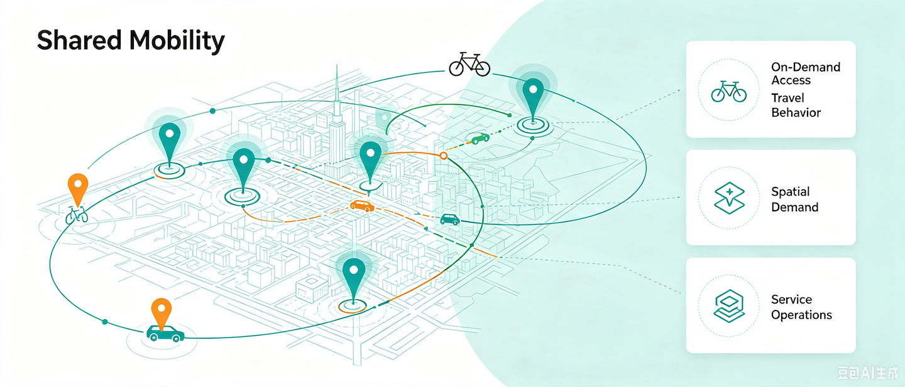
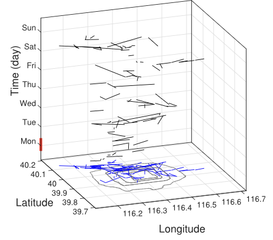
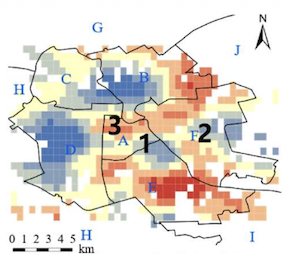
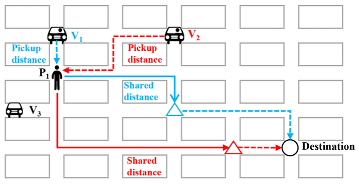
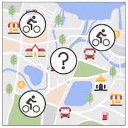
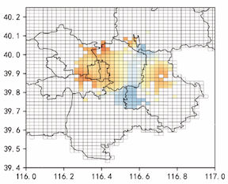
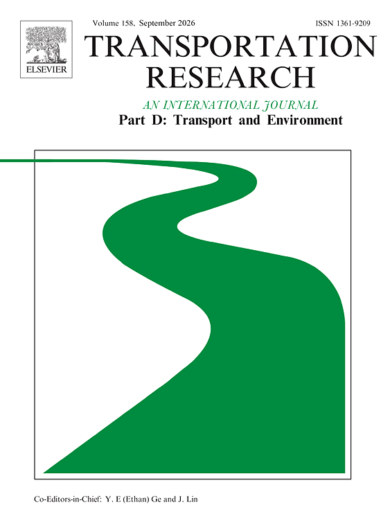
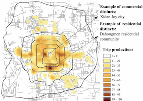

Shared Mobility: Behavior, Operations, and Planning
Overview
Shared mobility enables travelers to access vehicles or rides when needed through services such as ride-hailing, ride-pooling, and bike sharing. Understanding its demand, user behavior, market interactions, and operations is important for improving accessibility, efficiency, sustainability, and urban transport planning.

Our studies examine shared mobility through travel behavior, service characteristics, demand modeling, operational strategies, competition, and system planning:
- Ride-hailing has expanded rapidly, but limited multi-day operational data has constrained understanding of its mobility patterns. Using Beijing trip orders, we portrayed regional demand rhythms and driver service preferences, providing evidence for demand prediction, behavioral modeling, and platform management[1].
- Bike-sharing demand is sensitive to travel distance, but prior studies rarely distinguish how the built environment affects short and long trips. We identified a trip-length threshold and used a semiparametric geographically weighted Poisson regression model to reveal spatially heterogeneous effects, supporting bike placement and dispatch decisions[2].
- Dynamic ride-pooling dispatch is often short-sighted because current matching decisions overlook future pairing opportunities. We developed a prediction-based forward-looking dispatch strategy that estimates future distance savings and integrates them into bipartite matching, improving both system efficiency and passenger experience[3].
- Planning new bike-sharing stations requires time-dependent demand estimates despite the absence of historical records at those locations. We proposed MMGT, a multi-task memory-augmented graph neural network that transfers knowledge from existing stations and separately models daily trip intensity and hourly distributions[4].
- The conditions under which traditional taxis can compete with ride-hailing services are not well understood. We introduced a multidimensional framework and a Competition-Cooperation Index to identify when and where taxis hold advantages and to connect those patterns with land use[5].
- The rapid growth of shared mobility creates both environmental opportunities and new operational challenges across diverse service models. We synthesized research on service characteristics and correlates, environmental impacts, and operational and environmental improvements, framing priorities for policy and practice[6].
- Station-free bike-sharing data closely records destinations, creating an opportunity to infer travel purposes and urban functions from observed mobility. We developed a topic-based two-stage data-mining method that links mobility patterns with points of interest to reveal user behavior and city functional regions[7].
- Station-level demand depends on complex, heterogeneous relationships that fixed spatial graphs may miss. We proposed a graph convolutional neural network with a data-driven graph filter to learn hidden interstation correlations and temporal dependencies, improving hourly demand prediction on New York City's Citi Bike network[8].
Publications

[1]Portraying Ride-Hailing Mobility Using Multi-Day Trip Order Data: A Case Study of Beijing, China

[2]Exploring the Relationship Between Built Environment and Bike-Sharing Demand: Does the Trip Length Matter?

[3]A Prediction-Based Forward-Looking Vehicle Dispatching Strategy for Dynamic Ride-Pooling

[4]Time-Dependent Trip Generation for Bike Sharing Planning: A Multi-Task Memory-Augmented Graph Neural Network

[5]Exploring Competitiveness of Taxis to Ride-Hailing Services From a Multidimensional Spatio-Temporal Perspective: A Case Study in Beijing, China

[6]Shared Mobility: Characteristics, Impacts, and Improvements

[7]Understanding User’s Travel Behavior and City Region Functions From Station-Free Shared Bike Usage Data

[8]Predicting Station-Level Hourly Demand in a Large-Scale Bike-Sharing Network: A Graph Convolutional Neural Network Approach